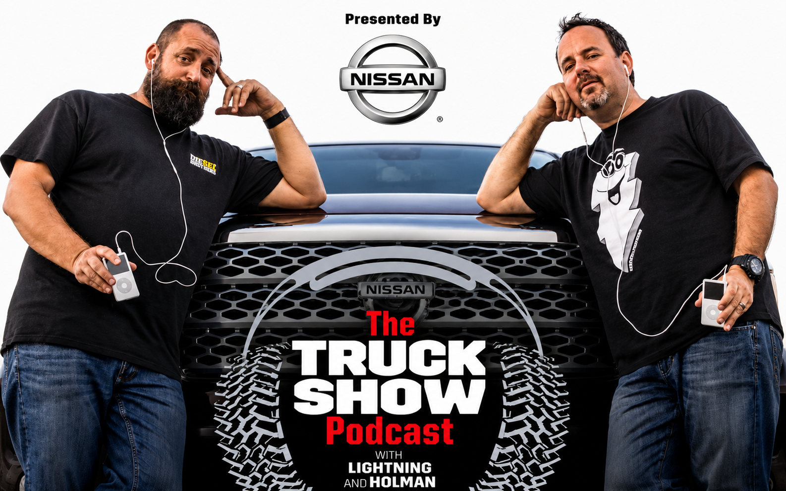
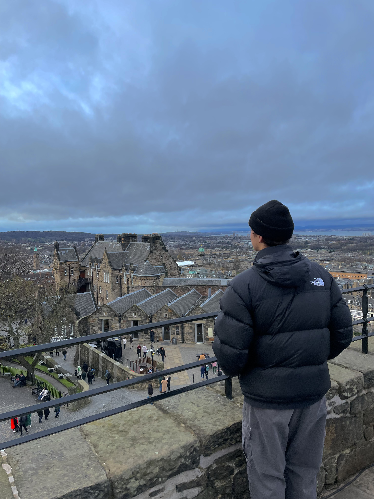
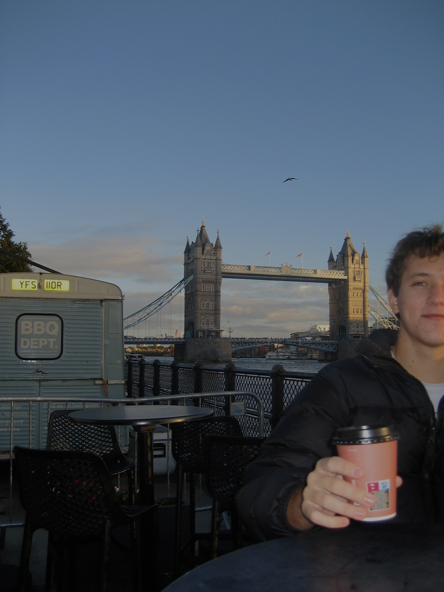
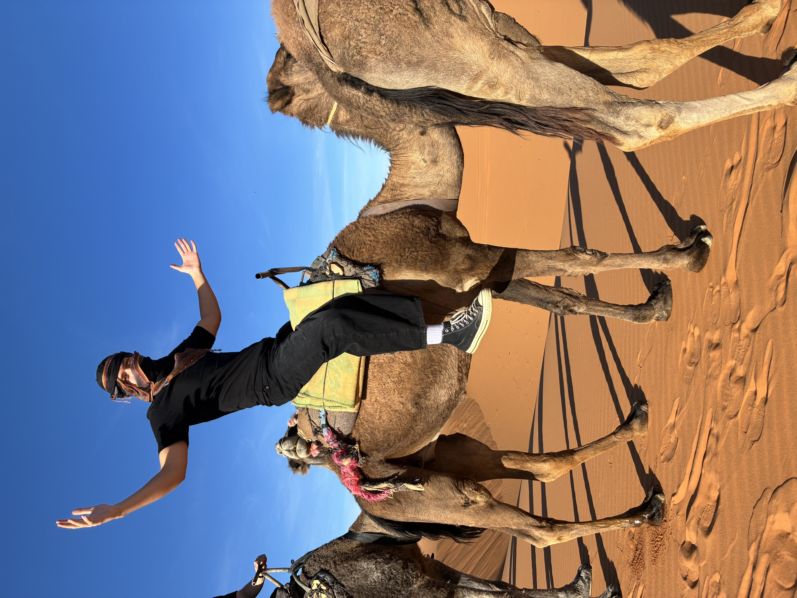
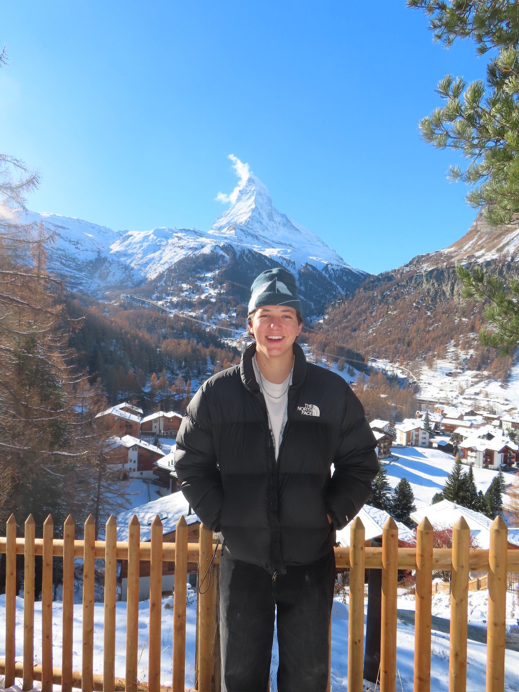
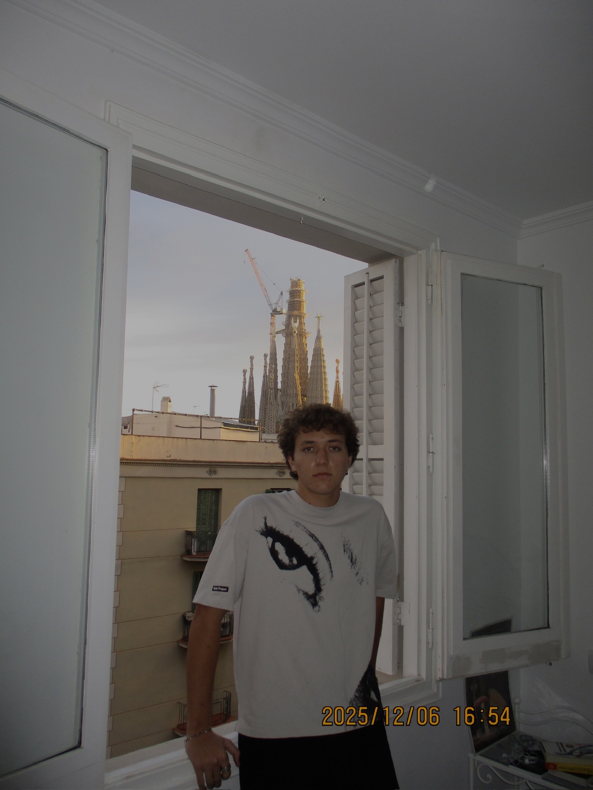
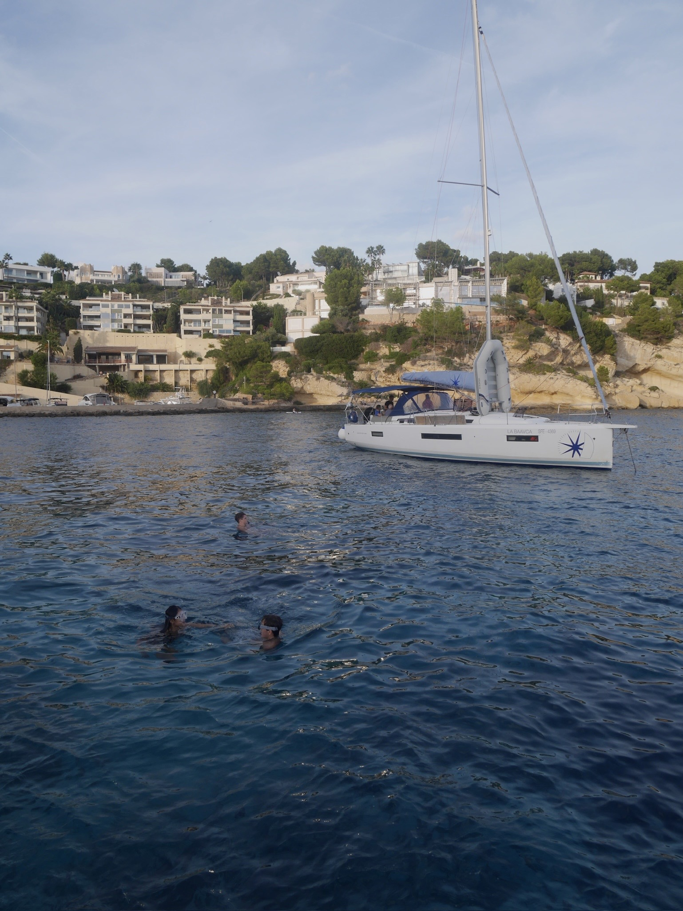
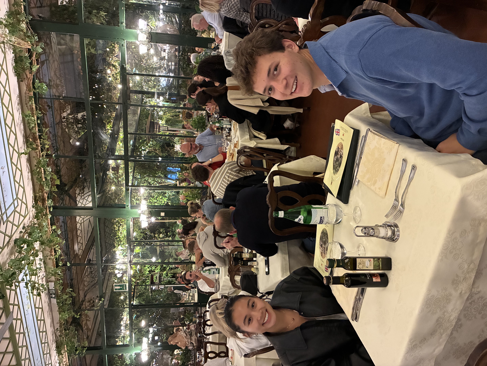
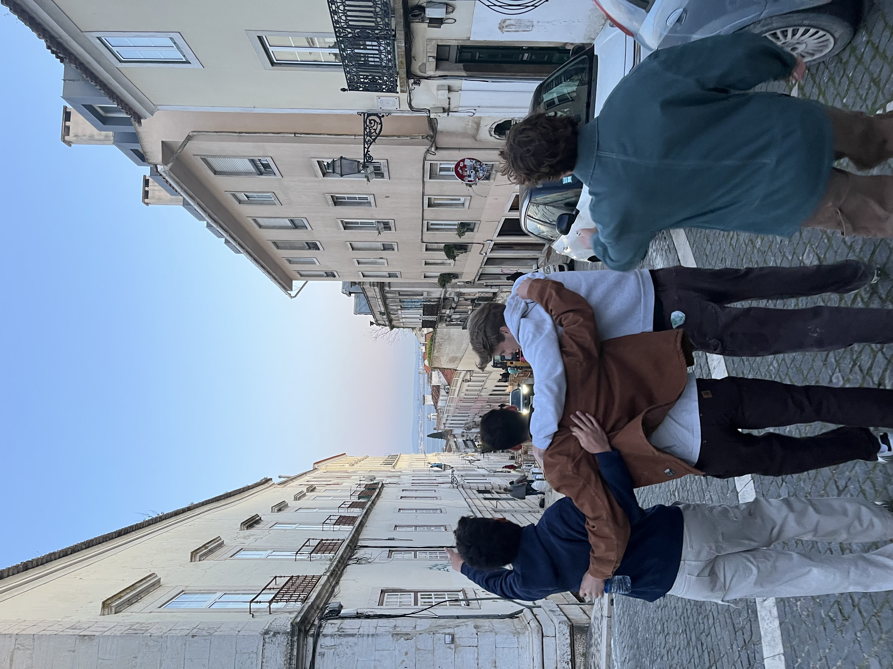

Location
Long Beach, CA
Education
Cal Poly, SLO — Class of 2027
Focus
Digital Marketing & Event Production
assets/photo.jpgBorn and raised in Long Beach, California, I'm a Sociology major at California Polytechnic University, San Luis Obispo, and my passions are digital marketing, concert production, and entrepreneurship.
I've worked in digital marketing for the last two years, and I'm currently planning a live event with my partner, working closely with crews and talent, with a focus on paid marketing. As a freelance marketer, I grew a clothing brand's social following from 1,000 to 100,000 through paid ads and social media funnels.
I studied abroad during the fall semester of my junior year in Barcelona, Spain, which fuels my love of traveling — though as much as I love California, I miss having four real seasons. At my core, I'm a family man who prioritizes the people closest to me.
I'm excited for future opportunities — thank you!
Brand New Media
Stage Management
Apr 2026 – Present
ActiveAssist Stage Management staff in coordinating talent on and off stage, helping ensure smooth, safe operations for crew, talent, and audience members.
JDINALLO
Media Buyer
Jan 2025 – May 2026
CompletedMedia buyer with the ability to turn cold traffic into consistent sales and leads through Meta Ad campaigns. Used short-form content concepts to scale engagement from 1,200 to 100,000 followers in one year.
Cal Poly Career Fair
Senior Project Lead
Aug 2026 – Feb 2027
ActivePlan and coordinate with a team to recruit employers; cold-call and email outreach, and coordinate with venue staff and media advertising.
BBI Autosport
Social Media Manager Intern
Dec 2025 – Jan 2026
CompletedIncreased Instagram engagement by shifting strategy to short-form video — Reels and TikTok cross-posts.
The Truck Show Podcast
Audio Editor
Nov 2023 – Dec 2024
CompletedEdited two episodes per week for the #1 pickup-truck enthusiast podcast, Truck Famous LLC.
Long Beach Clothing
Sales Associate
Aug 2024 – Dec 2024
CompletedGave style guidance and resolved customer issues for a memorable in-store experience.
LA County District Attorney's Office
Intern Law Clerk
Jun 2023 – Aug 2023
CompletedSat at counsel table during arraignments; managed case materials and the case calendar.
Target Corporation
Sales Associate
Jul 2022 – Jul 2023
CompletedProcessed in-store and drive-up order pickups, ensuring accuracy and timely fulfillment.
KROQ-FM Los Angeles
Event Staff Crew
Jun 2016 – Sep 2018
CompletedAided promotional staff and DJs during live events.
California Polytechnic State University, San Luis Obispo
B.A. Sociology & Criminal Justice
2023 – 2027 (Expected)
Millikan High School
Long Beach, CA — High School Diploma
2019 – 2023
I was lucky to be part of the BBI Autosport team, creating short-form content designed to drive high engagement and sales. It was an amazing opportunity to showcase my video editing skills and understanding of short-form engagement.
Format
Reels
Result
Engagement ↑
Recently, I've had the opportunity to work with Brad Smith at Brand New Media on a few different events. Nylon House was by far the most influential — a private event held during Coachella Weekend 1, 2026. My role involved assisting the talent and their team, and coordinating with the lighting crew, stage crew, and security to ensure the safety of all attendees.
Format
Live Event
Result
Audience Engagement

Not only did I learn an abundance about podcasting and trucks, but I also picked up new audio editing skills using Adobe Premiere. Working with both co-hosts was insightful, and I'm proud to have been part of the #1 truck podcast on Apple Podcasts.
Format
Podcast
Result
#1 on Apple
I was incredibly excited to start my digital marketing journey with clothing designer Joey Dinallo in late 2024. We worked together on media buying for his custom clothing, starting with his sweatsuit collection, as well as short-form media. When we began working together, he was at 1,200 followers across all platforms. He now sits at 270,000+ followers.
Format
Reels
Result
Engagement

Edinburgh, Scotland
London, UK
Morocco, Africa
Zermatt, Switzerland
Barcelona, Spain
Mallorca, Spain
Sorrento, Italy
Lisbon, Portugal